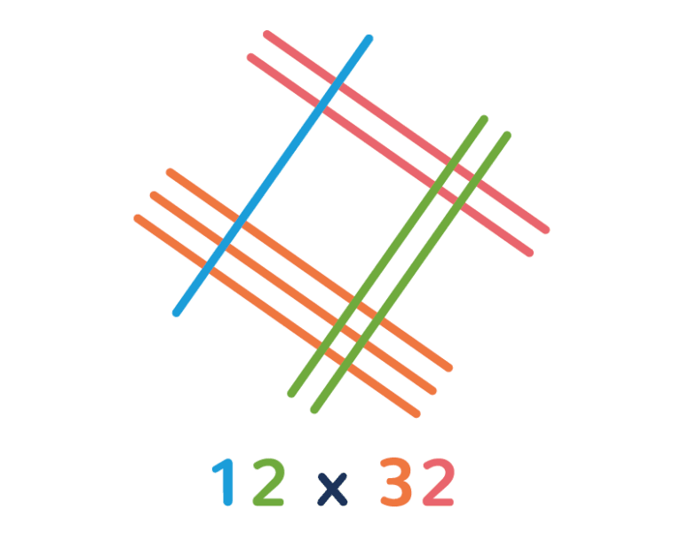
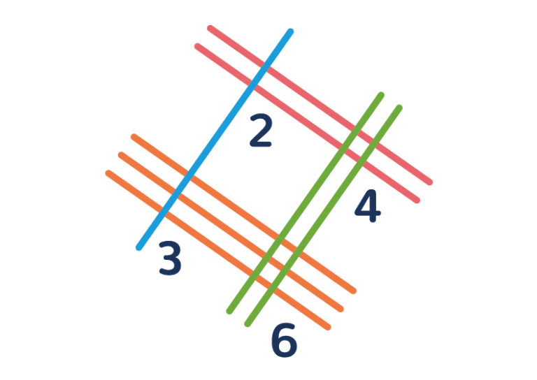

How does the Japanese multiplication method work?The Japanese multiplication method is an interesting visual method that reduces multiplication to simple counting! Sounds too good to be true, right? Let’s take 12×32 as our example. Remember that numbers are represented using place value: 12 means one ten and two ones, 32 means three tens and two ones. We then draw diagonal lines corresponding to the tens and, after leaving a gap, we draw more lines in parallel to represent the ones (it helps to use a different colour). All we’re doing is taking the familiar place value representation of numbers and making it visual. Now let’s do the number 32, except this time we’ll go in the opposite direction. You should be left with a rough diamond shape, with the lines crossing at the corners:

To calculate the product, we just need to count how many times all of the lines intersect and write each number under the diamond.

Begin by grouping the intersections vertically. That is, draw a loop around the group of intersections that is closest to the left side (where the blue and orange lines intersect). Then begin moving right. Draw a loop around the center intersections (the red and blue, and the orange and green). Finally, draw a loop around the intersections that are closest to the right side (where the green and red lines intersect). What you’ve actually done is calculated the number of Hundreds, Tens and Ones in the product: 
So the 12×32 is 3 hundreds, 8 tens and 4 ones – in other words (or symbols, rather!) it is 384. |
||
TRY IT OUTInsert two natural numbers between 0 and 99: |
||
|
|
||